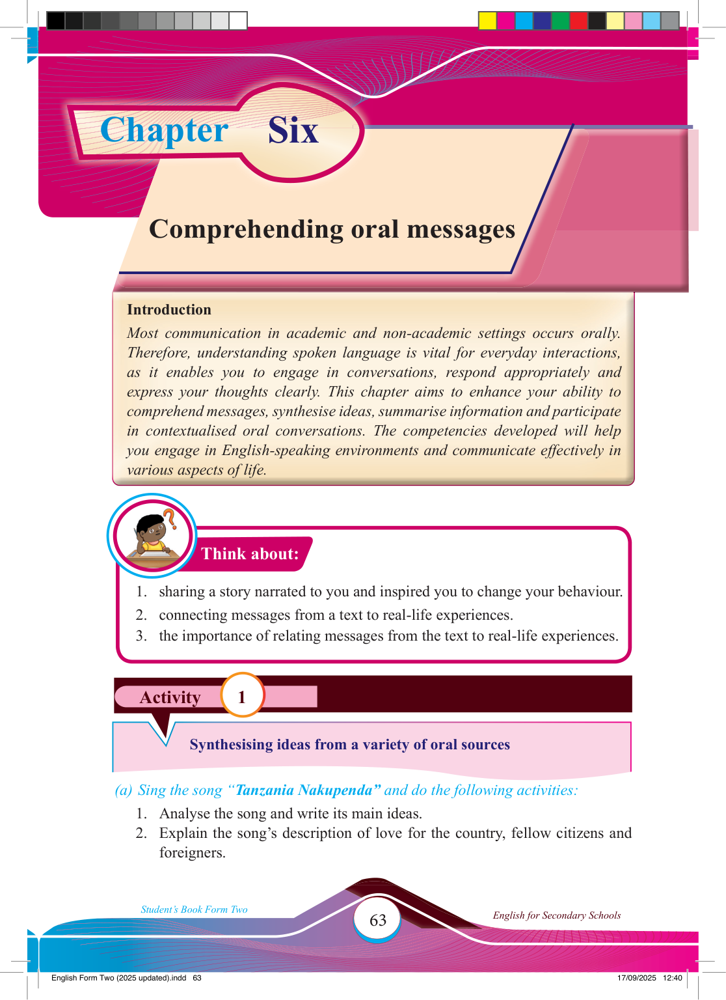

Chapter
Six
Activity 1
Think about:
Comprehending oral messages
Introduction
Most communication in academic and non-academic settings occurs orally.
Therefore, understanding spoken language is vital for everyday interactions, as it enables you to engage in conversations, respond appropriately and express your thoughts clearly. This chapter aims to enhance your ability to comprehend messages, synthesise ideas, summarise information and participate in contextualised oral conversations. The competencies developed will help you engage in English-speaking environments and communicate effectively in various aspects of life.
1. sharing a story narrated to you and inspired you to change your behaviour.
2. connecting messages from a text to real-life experiences.
3. the importance of relating messages from the text to real-life experiences.
Synthesising ideas from a variety of oral sources
(a) Sing the song “Tanzania Nakupenda” and do the following activities:
1. Analyse the song and write its main ideas.
2. Explain the song’s description of love for the country, fellow citizens and foreigners.